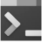

Terminal
Recycle Bin
Resume
This PC
Pinned
Chrome
Resume
Terminal
Projects
01-ColorFlipper
02-Counter
03-Reviews
04-Navbar
05-Sidebar
06-Modal
07-Questions
08-Menu
09-Video
10-Scroll
11-Tabs
12-CountDown
13-Lorem
14-Grocery-Bud
15-Slider
16-Counter-OOP
17-Gallery
18-Numbers
19-DarkMode
20-Filters
21-Dad
22-Products
23-Random-User
24-Cocktails
25-Slider-ES6
26-Stripe-SubMenu
27-Pagination
28-Wiki-API
29-CapstoneProject-